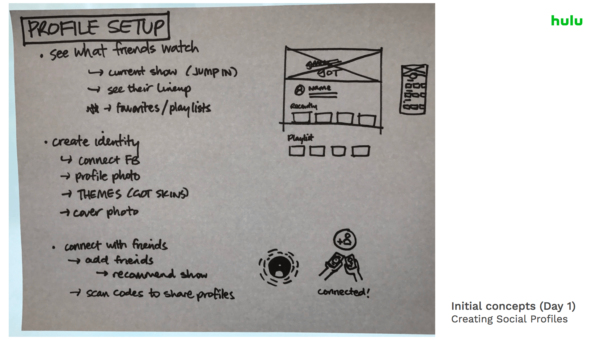

Add Me On Hulu,
Add Me On Hulu is a concept product that builds a community of Hulu users to engage socially about the content they love. Imagine being able to watch your favorite content with your friends when you’re in Los Angeles and they are in San Francisco.
This is a two-person internal Hulu hackathon project that involved competitive analysis, user flows, wireframes, visual mockups, and prototypes (Principle) completed in 2 days. Thank you to the Hulu design team for your support and the amazing Tiffany Jiang for being a fantastic design partner!
You can view the prototype here.
Process:
We developed a mind map to derive a holistic view of the Hulu platform. This allowed us to look at the relationship between feelings, experiences, and ideas. One of the critical insights that we stumbled upon through this exercise was that TV is inherently a social and community experience.
Based on the mind map, we swarmed around the different methods in which people communicate over the content they love. It was important to understand natural context of how people interact in order to get a holistic view. From messaging your friends during the latest Game of Thrones release to reading fan theories on Reddit, there are various different states that people embody.
Following our communication affinity map, we looked for inspiration in terms of content engagement from other social media sites. We quickly drew up various social media UX based on our own usage. Our goal was to think about all the different ways in how users experience content socially.

This exercise actually help pushed our design further because we were able to look beyond just thinking about TV. For example, we noticed how people love to put TV premiers on their Snapchat story. Our assumption is that they are creating a micro-community within stories themselves. Another interesting example was Spotify “Friend Activity” and how people can actively engage with music content directly when their friends are watching it.
Thinking About Profiles:

Profiles is the truly foundation for social identity and community. It allows us to create a sense of belonging within a larger community and to think about social aspects within the Hulu platform.
Our Solution in Lo-Fi:
This was our first stab at profile page. Our goal was to give users an identity beyond lineup recommendations. Some of our early ideas was having profile skins based on user’s favorite content.
Our other idea was Watch Parties, a feature product that allowed users to watch the content they love with their friends in real time. From any TV show, users could set up a watch party and invite their friends, similar to a party invitation in real life.

One of the challenges with watch parties was the introduction of “friends.” It adds a complex layer that was critical in order to get the experience right. We spent a lot of time discussing the tradeoffs of how to treat friends.

Hi-Fidelity Screens: